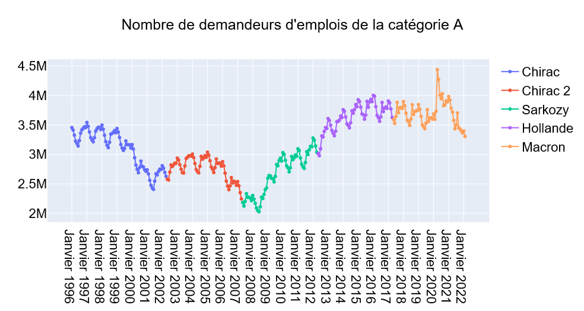
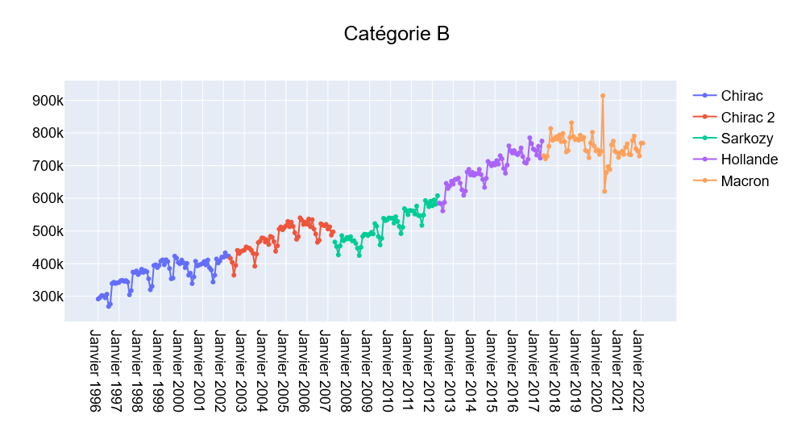
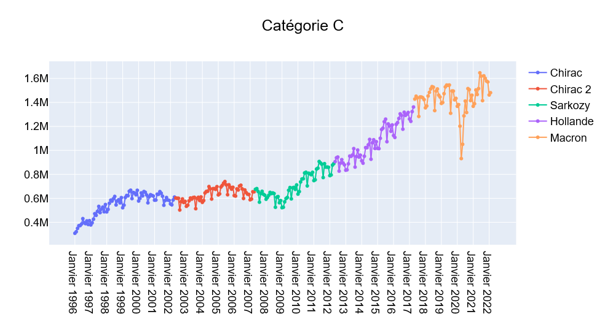
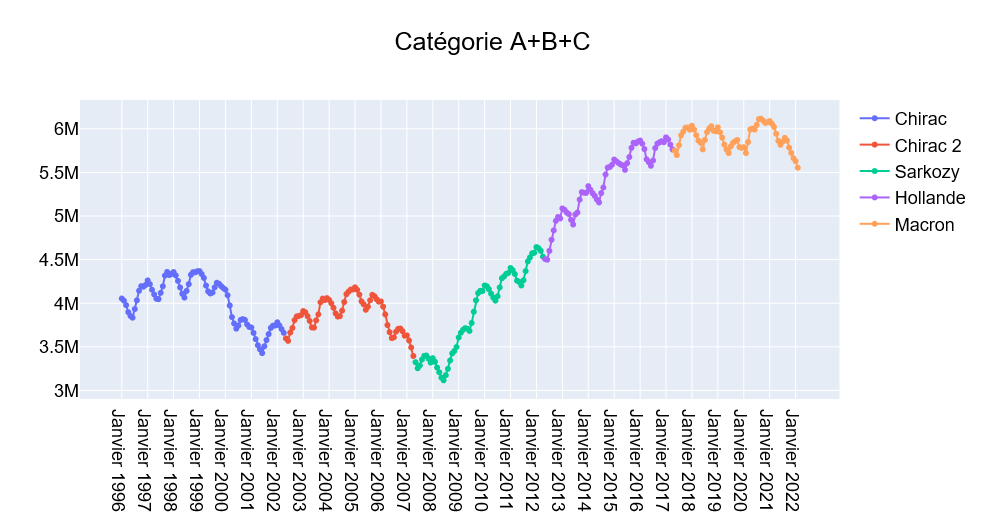

Les demandeurs d'emploi inscrits à Pôle Emploi sont repartis en cinq catégories A, B, C, D et E.
On s'intéresse ici aux catégories A, B et C. Les demandeurs d'emploi appartenant à ces catégories "sont tenus d'accomplir des actes positifs de recherche d'emploi" au contraire de ceux inscrits dans les catégories D et E. Source : https://www.service-public.fr/particuliers/vosdroits/F13240
Les données utilisées pour la présente analyse sont les données brutes mensuelles fournies par Pôle Emploi. Elles sont accessibles depuis https://statistiques.pole-emploi.org/stmt/defm?fi=11&lf=0&ss=1
Les scripts Python utilisés pour générer les graphiques présentés ci-dessous sont accessibles ici.
La catégorie A est la plus largement commentée dans les médias, on pourrait même dire quasi-exclusivement. Elle regroupe les : "Personne(s) sans emploi, devant accomplir des actes positifs de recherche d'emploi : Démarches régulières de recherche d'emploi pour lesquelles le demandeur d'emploi doit être en mesure de produire un justificatif (candidatures envoyées, participation à des sessions d'aide à la recherche d'un emploi...), à la recherche d'un emploi quel que soit le type de contrat (CDI,CDD, à temps plein, à temps partiel, temporaire ou saisonnier)" .
Son évolution depuis 1996 est illustrée ci-dessous pour les différents présidents de la République qui se sont succédés.

Les catégories B et C, dont on entend moins parler, correspondent aux demandeurs d'emploi avec une activité réduite.
La catégorie B reroupe les : Personne(s) ayant exercé une activité réduite de 78 heures maximum par mois, tenue(s) d'accomplir des actes positifs de recherche d'emploi.
Evolution depuis 1996 pour la catégorie B.

La catégorie C regroupe les : Personne(s) ayant exercé une activité réduite de plus de 78 heures par mois, tenue(s) d'accomplir des actes positifs de recherche d'emploi
Evolution pour la catégorie C depuis 1996.

On obtient une vision globale illustrée ci-dessous de l'évolution du nombre de demandeurs d'emplois des 25 dernières années en combinant les catégories A, B et C.
Il est particulièrement remarquable que le nombre de demandeurs d'emplois dans les catégories A, B et C combinées a pratiquement doublé entre la crise des subprimes de 2008 et la crise du COVID débutée en 2020, passant de près de trois millions de personnes à près de six millions.
